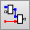
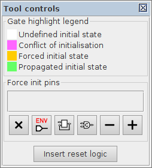
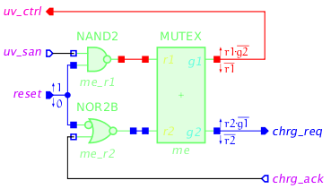
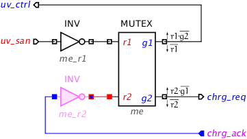
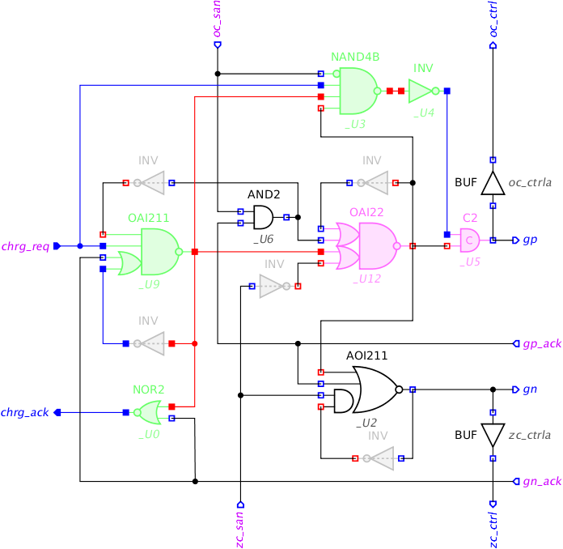
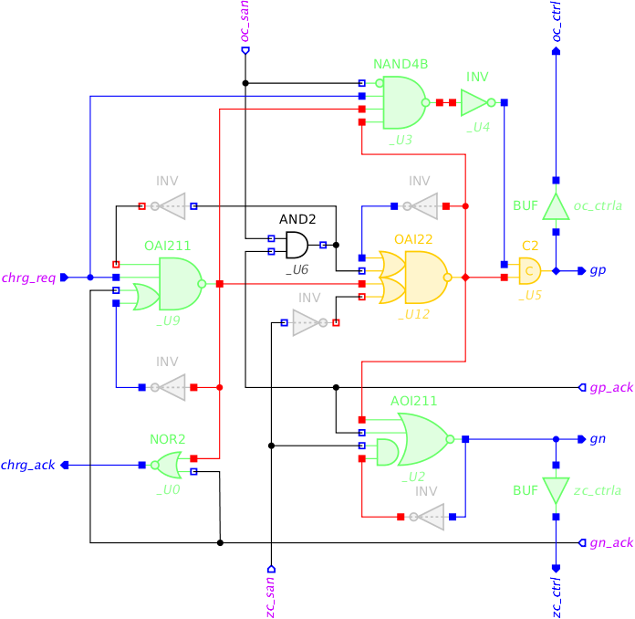
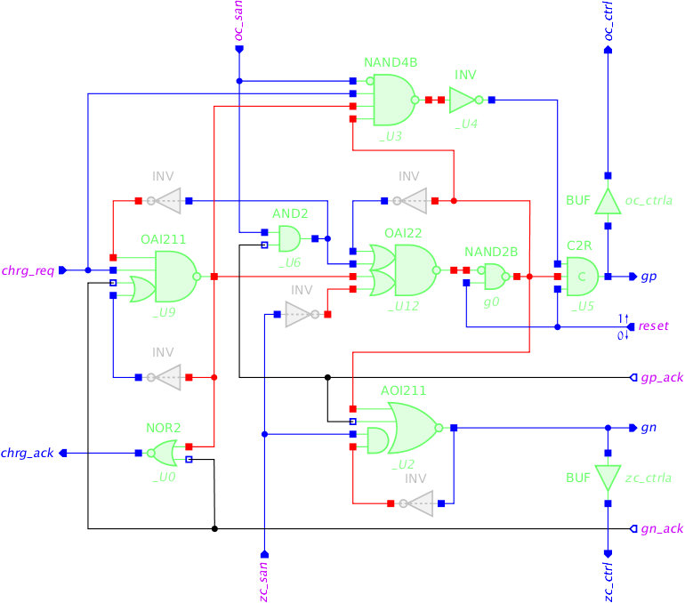
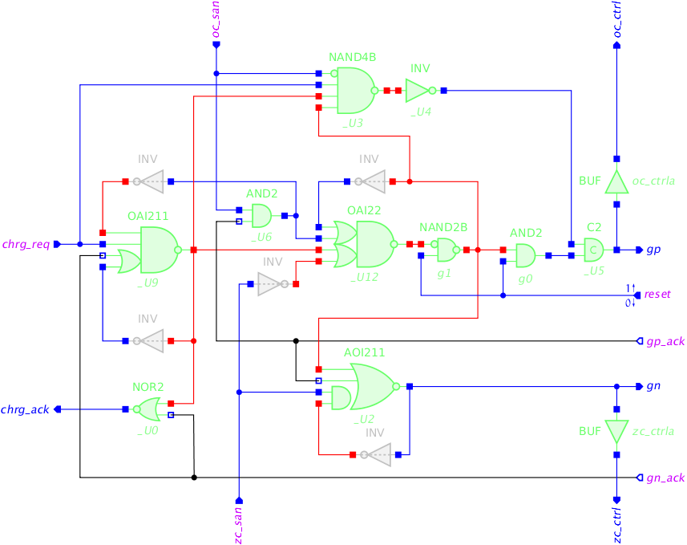

Table of Contents
Initialisation of speed-independent circuits
In this tutorial we will use CYCLE and CHARGE modules developed in the Hierarchical design of a realistic buck controller tutorial. The top-level schematic of the controller is as follows:

Circuit implementations of CYCLE and CHARGE modules and also STG specifications of their contract with environment (which will be used for circuit verification) can be downloaded here:
| Module name | STG specification | Circuit implementation |
|---|---|---|
CYCLE | cycle.stg.work (3 KiB) | cycle-tm.circuit.work (3 KiB) |
CHARGE | charge.stg.work (4 KiB) | charge-tm.circuit.work (7 KiB) |
Initialisation analyser
Initialisation (or reset) of a speed-independent circuit is an important part of the design process because a circuit can malfunction if its initial state is incorrect. Note that the initialisation phase of a speed-independent circuit does not have to be speed-independent: It is assumed that there is a special reset signal that is generated externally and behaves as follows:
- When the power is connected,
resetis low. - It stays low for sufficiently long time to complete the initialisation of all gates.
- Eventually
resetgoes high, at which point the circuit is already correctly initialised and the normal speed-independent operation begins. resetstays high for the whole time of circuit normal operation.
There are several ways of circuit initialisation that can be used in combination:
- Rely on the initial state of some of the inputs (which are guaranteed to be correctly initialised by the environment). They propagate through some of the logic gates to initialise some of the internal and output signals.
- Substitute some of the gates with ones containing an extra input that can act as a set or reset pin.
- Insert additional gates to explicitly initialise the internal and output signals. Such gates will act as buffers during the normal operation, so one has to be careful not to break any isochronic forks.
Initialisation analyser  tool is designed to aid the decision of how to reset a speed-independent circuit. The tool uses Init to one and Forced init properties of circuit signals (i.e. primary input ports and output pins of circuit components):
- Init to one property defines the initial state of the signal. If a circuit is synthesised by one of the backend tools, then the initial state of all its signals is set automatically. However, if the circuit is manually altered, then the designer is responsible for specifying the initial states of the signals.
- Forced init property defines if the signal is known to be in a correct initial state. For a primary input it means the environment takes care of initialising the signal to its expected state. For a component output pin it means that the necessary circuitry will be added to properly initialise that pin.
These properties can be viewed and modified in the Property editor when an input port or an output pin is selected. Note that selecting a single-output component (i.e. a gate) also reveals these properties of its only output pin. Note that zero delay gates hide Force init property as these gates should not be modified.
Initialisation analyser uses these properties as follows. It considers the signals whose Forced init property is set as initialised, while the remaining signals are assumed as uninitialised. The tool tries to evaluate each uninitialised signal on the Init to one property of initialised signals. If the Boolean value of a signal can be derived, then it is said to have propagated initial state and the signal is also considered initialised. The tool repeats evaluation of uninitialised signals until no further progress can be made, i.e. no new initialised signals can be obtained. At this stage, if some signals are still uninitialised it means Forced init property of the circuit signals needs to be adjusted, until all the signals are successfully initialised.
Sometimes the correct initial state of a signal cannot be achieved and the signal is said to have initialisation problem. There are two sources of initialisation problems:
- Conflict of initialisation, which happens when the propagated initial state of a signal does not match its Init to one property. This often indicates a mistake, e.g. incorrect initial value of the signal, however, there are legitimate situations where such conflicts can occur.
- Unreachable initial state, which happens with sequential (self-dependent) signals whose expected initial state cannot be reached by assigning the component inputs.
In both cases such a problematic signal needs to be explicitly initialised by setting its Forced init property.
Initialisation analyser visualises the initialisation state using the Gate highlight legend shown in the Tool controls:

By default the highlighting scheme for circuit components is as follows (the colours can be adjusted in the preferences of digital circuit model – see Edit→Preferences…→Decoration→Analysis):
- Components whose initial state cannot be determined via propagation of forced signals are not highlighted (i.e. remain white).
- Zero delay components, which must not be modified by reset insertion, are highlighted grey.
- Components with initialisation problems (conflict of initialisation or unreachable initial state) are highlighted magenta.
- Components whose pins have Forced init property set are highlighted orange.
- Correctly initialised components are highlighted green.
The pins and ports are coloured according to their initialisation state (red for high level and blue for low level), as follows:
- The pin outline color indicates the expected initialisation state defined by the Init to one property, while its background color reflects the actual propagated initialisation state. In case of a mismatch (the propagated value differs from the expected one) the problematic pin can be easily identified by its different outline and background colours.
- Output pins whose Forced init property is set are visualised by diamond shape. The initial state of such pins is forced to the expected value, according to their Init to one property.
The color scheme for wires is as follows:
- Wires of uninitialised signals are coloured black.
- Wires of initialised signals are coloured red or blue according to their initial state.
Force init pins table enumerates the pins whose Forced init property is set. Note that Forced init property of a signal can be toggled while in Initialisation analyser tool by clicking the corresponding input port, output pin, or a gate. This enables convenient exploration of possible reset strategies. The tool also provides several ways of changing Force init property for a group of contacts:
- - Tag Forced init property for all input ports. Note that it is the environment responsibility to guarantee the correct initialisation of primary inputs whose Forced init property is set.
- - Tag Forced init property for all output pins with problematic initial state.
 - Tag Forced init property for output pins of all sequential gates.
- Tag Forced init property for output pins of all sequential gates. - Set Forced init property of output pins as necessary to complete initialisation of the circuit.
- Set Forced init property of output pins as necessary to complete initialisation of the circuit.- - Clear Forced init property of output pins that are redundant for the circuit initialisation.
- - Clear Forced init property for all input ports and output pins.
Circuit initialisation comprises three steps:
- Reset exploration – Decide which signals should be forced to the initial state, so that the correct initial values propagate to the remaining circuit components. Selecting a good set of forced signals is a creative process with multiple optimisation targets (avoiding critical paths, circuit size, gate complexity, etc.) and relies on designer experience.
- Reset insertion – Insert the reset port
reset, set its Init to one property according to the reset active state (false for active low, true for active high), and use it to initialise all the signals that have Force init property set. - Reset validation – Clear Force init property of all component pins and input ports, set Force init property for the reset port, and check that all the circuit components are correctly initialised.
Initialisation of CYCLE module
For initialisation of CYCLE we cannot rely on any inputs. Indeed, the WAIT2 element on uv_ctrl / uv_san interface does not have an explicit reset and the initialisation of CYCLE component on chrg_req / chrg_ack is not yet considered. The two inverters me_r1 and me_r2 on the MUTEX inputs are good candidates for introducing reset – click both of them to indicate their force initialisation (notice the diamond shape of their forcefully initialised output pins). As the result MUTEX grants get initialised in their correct initial states.

Now let us automatically insert active-low reset signal by clicking Insert reset (active-low) button. By default the reset port is called reset, but this can be changed via Digital Circuit→Reset port name of global properties. The modified circuit should look as follows:

Note that now only reset port is forced to its initial state and the rest of CYCLE circuit is correctly initialised.
Initialisation conflict happens when the Boolean function of the gate evaluates to a state that is different from the expected state of a signal. Such gates are highlighted in magenta. For example, if in CYCLE module one relies on input chrg_ack whose initial state is 0, then the inverter me_r2 evaluates to 1 which is different from the required initial state of this signal:

In such situations the problemetic gate must be explicitly initialised to the required state. The user is expected to set Forced init flag on such a gate by clicking it in the Initialisation analysis tool.
Initialisation of CHARGE module
For initialisation of CHARGE module one can already rely on CYCLE module
initialising chrg_req input to 0. Click on this input port to
indicate that its initial state is guaranteed by the environment. The gates which
are initialised correctly through this input will be highlighted in green:

Two gates, _U5 and _U12, exhibit initialisation problem and need to be forced to the correct initial state. Indeed, C-element _U5 has its inputs in the opposite initial values, so
cannot evaluate its output to any particular value. Similarly, gate _U12 has a feedback loop on one of its inputs and cannot be initialised to a correct state via its other inputs.
Click on each of these gates or press button to indicate that we will take care of explicitly initialising them – the gates will turn orange and the shape of their output pins will change to diamonds:

Let us see how the remaining gates can be initialised. Note that both oc_ctrl and zc_ctrl outputs are now successfully initialised to 0. At the top level, these signals interface the WAIT elements that produce oc_san and zc_san inputs, respectively. As WAIT element resets its san output when its ctrl input is low, signals oc_san and zc_san are guaranteed to be initially low – click these inputs to indicate this. Now the whole CHARGE module is initialised, provided that gates _U5 and _U12 (highlighted in orange) are explicitly reset:

In order to automatically insert active-low reset logic into the CHARGE component just press Insert reset (active-low) button. A reset pin will be added to _U5 C-element and a NAND2B gate will be added to the output of _U12 gate, both connected to the reset port:

Note that initialisation pin of the C-element is called R (the default names of initialisation pins can be changed in Initialisation SET pin name and Initialisation CLEAR pin name properties of Digital Circuit model in global preferences) and it is mapped to C2R module now. This module name is generated by adding the name of the initialisation pin R as a suffix to the original module name C2. If this does no match the name of C-element with reset in your library please correct it manually.
Use Initialisation analyser to check that it is sufficient to force only reset, chrg_req, oc_san, and zc_san inputs for correctly initialisation of CHARGE circuit.
Alternative reset insertion
An alternative way to reset the _U5 C-element is by forcing both its inputs to 0 (this may be useful if there is no C-element with reset pin in your library). This can be achieved by inserting a buffer in front of the C-element input that is expected to be high (right-click on the wire and select Insert buffer command in the popup menu) and setting initial state of the buffer output to low (clear its Init to one property). Now both inputs of the C-element are expected to be initially low and therefore its output evaluates 0.
It is not safe to insert a gate into a fork branch, as the fork ceases to be isochronic thus potentially breaking the speed-independence of the circuit. Such modifications must be verified.
Note, however, that inserting a new gate into the ‘trunk’ of a fork, before branching, is safe, as the resulting delay can be conceptually added to the delay of the driving gate.
In this particular case, a delay in the fork branch does not cause a problem, as can be confirmed by verifying the circuit correctness after the buffer insertion. As an experiment, try to delay the other branches of this fork and see if this breaks any correctness properties.
Note that the newly inserted buffer 'g0 exhibits a conflict of initialisation – its input is initially high, while the output is expected to be low. Therefore, the output of the buffer must be forced to the correct initial state by setting its Force init property). The complete alternative initialisation scheme should look as follows:

Insertion of the active-low reset yields the following circuit:

Here the buffer g0 is converted to an AND2 gate whose one input is connected to the reset port. The gate is forced low during reset and behaves as a buffer otherwise.
Cyclic dependencies
When initialising a circuit composed from several blocks, one has to make sure that there are no cyclic dependencies during the initialisation.
For examples, CYCLE and CHARGE communicate via a handshake. Suppose CYCLE relies
on its input chrg_ack to initialise
chrg_req, and CHARGE relies on it
input chrg_req to initialise chrg_ack.
This creates a cyclic dependency and the resulting circuit will not initialise reliably.
Verification of circuits with initialisation
The obtained circuits have an extra reset input. It is initially low and
expected to stay low for sufficiently long to initialise all the gates into their expected initial
states – note that the initialisation phase is not speed-independent (and not expected to be).
When reset goes high, the circuit starts its normal speed-independent operation.
This behaviour of reset is automatically imposed as follows:
- Its Init to one property is set to false (unchecked), thus specifying that
resetis initially low. - Its Set function is assigned to
1and Reset function is assigned to0, thus denoting thatresetis only allowed to go high and then never go low again.
The circuits with reset can be verified for deadlocks, output persistency, and conformation
to the original STGs in the usual way via Verification menu. Do this for
both CYCLE and CHARGE modules.
Exporting to Verilog
Both CYCLE and CHARGE modules are mapped to a gate library and are correctly initialised. Now
they can be exported to Verilog for the remaining stages of the design flow
using File→Export→.v (Workcraft Verilog serialiser) menu. Here is a
result of exporting the CYCLE module:
- cycle-tm-reset.v
// Verilog netlist generated by Workcraft 3 (Return of the Hazard), version 3.2.3 module CYCLE (chrg_ack, chrg_req, uv_ctrl, uv_san, reset); input chrg_ack, uv_san, reset; output chrg_req, uv_ctrl; wire me_r1_rst_ON, me_r2_rst_ON; NAND2 me_r1_rst (.ON(me_r1_rst_ON), .A(uv_san), .B(reset)); NOR2B me_r2_rst (.ON(me_r2_rst_ON), .AN(reset), .B(chrg_ack)); MUTEX me (.r1(me_r1_rst_ON), .g1(uv_ctrl), .r2(me_r2_rst_ON), .g2(chrg_req)); // signal values at the initial state: // me_r1_rst_ON !me_r2_rst_ON uv_ctrl !chrg_req !chrg_ack !uv_san !reset endmodule
The produced Verilog inherits the names of gates and pins as they are defined in the Property editor for the corresponding nodes. The specifications of these gates are taken by the technology mapping backend from the library/workcraft.lib GenLib file by default. A custom GenLib file can be supplied via Digital Circuit→Gate library for technology mapping property of global settings (accessible via Edit→Preferences… menu).
These names can also be substituted by providing a conversion file in the Digital Circuit→Substitution rules for export property of global preferences. For example, libraries/workcraft-tsmc_ghp.cnv file has the rules to convert librarys/workcraft.lib gates to match the naming convention of TSMC GHP library. For CYCLE module the produced TSMC-compatible Verilog is as follows:
- cycle-tm-reset-tsmc.v
// Verilog netlist generated by Workcraft 3 (Return of the Hazard), version 3.2.3 module CYCLE (chrg_ack, chrg_req, uv_ctrl, uv_san, reset); input chrg_ack, uv_san, reset; output chrg_req, uv_ctrl; wire me_r1_rst_ON, me_r2_rst_ON; ND2D1 me_r1_rst (.ZN(me_r1_rst_ON), .A1(uv_san), .A2(reset)); INR2D1 me_r2_rst (.ZN(me_r2_rst_ON), .A1(reset), .B1(chrg_ack)); MUTEX me (.r1(me_r1_rst_ON), .g1(uv_ctrl), .r2(me_r2_rst_ON), .g2(chrg_req)); // signal values at the initial state: // me_r1_rst_ON !me_r2_rst_ON uv_ctrl !chrg_req !chrg_ack !uv_san !reset endmodule
Solutions
Download all the Workcraft models discussed in this tutorial here:
Circuit models (37 KiB)
===== Feedback =====
- As discussed in https://www.dokuwiki.org/plugin:include#controlling_header_size_in_included_pages, by default, the headers in included pages start one level lower than the last header in the current page. This can be tweaked by adding an empty header above the include:\\
====== ====== {{page>:tutorial:feedback&inline}} - For offline help generation the content of
feedbackpage should be temporary wrapped in<WRAP hide>. Note that the headers still propagate to the table of contents even if inside the hidden wrap. Therefore the Feedback title needs to be converted to something else, e.g. to code by adding two spaces in front.